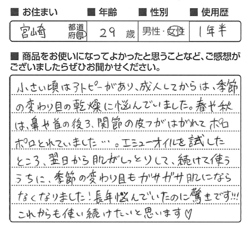
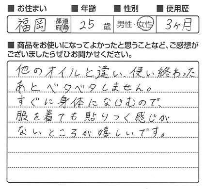
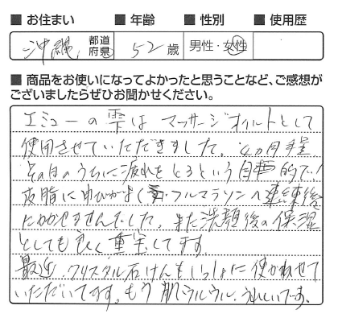

完全無添加、100％天然のエミューオイル「エミューの雫」のご紹介です。
高い浸透力と保湿力、秘密は脂肪酸にあり。
【重要】消費税率の変更に伴うお知らせ
定期購入を除く当店全商品について、「10/1以降の出荷日」より税率が変更となります。
また、送料・代引き手数料も税率変更の対象となります。 >詳細はこちら
＊エミューの雫15mlは、クレジットカード決済の場合、郵便受けでお受取り可能なゆうパケットでお送り致します。

エミューは、寒暖の差が激しく、乾燥した砂漠地帯で8000万年もの間生き延びてきた、
生命力の非常に強い古代鳥。
鋭い爪を持ち、岩の多いオーストラリアの内陸に住んでいますが、
野鳥の中でも爪や岩などによる外傷が悪化して死亡するケースが極めて少ないことが
わかっています。エミューは、他の動物と比べ、肌の再生力が恐ろしく早いのです。
またエミューは、卵を外敵から守るため、約60日間、水や食べ物を一切とらず、
皮下脂肪を栄養に換えて消費します。
エミューオイルは、生き延びるために蓄えられた、栄養価の高い皮下脂肪から抽出されます。
オーストラリアの原住民族アボリジニは、エミューオイルを肌に塗る万能オイルとして
4万年以上も前から利用してきました。
からだに不足している成分を正常な状態に戻すには、その成分を取り入れる(もしくは生成する)必要がありますが、無理なく自然に、優しく成分を取り入れるためには、人体を構成する成分にどれだけ近いかが重要なポイントとなります。
エミューオイルは他の動物性油や植物性油にはない、極めて人間の皮脂に近いバランスであり、しかも化学調合などによるものではなく全て自然により含有しているものなので、親和性が高く、自然に不足した成分を補給することができます。
●脂肪酸組成 比較表：『エミューオイルと人間の皮脂の成分比較表』 及び他オイルとの比較
（参考： 米国 Ｌ.ホプキンス博士/日本油脂検査協会 他）
エミューオイルは必須脂肪酸であるオメガ３・６・９をバランスよく天然で含んでおり、角質層まで自然に、優しく浸透します。「肌表面を覆っただけ」のような感覚がなく、しっとり保湿されているのが実感出来ます。
また、エミューオイルはマッサージオイルとしても優秀で、トップアスリートのトレーナーや野球球団、サッカーチーム等も利用しており、その長い活躍をサポートしています。
- ●皮膚深部への高い浸透力･･･オレイン酸(ω-9系)
- オリーブ油などにも含まれ、皮膚吸収に優れており、成分をよりよく浸透させます。また、酸化に強く、劣化しづらい性質を持ちます。
- ●うるおいをキープする高い保湿性･･･リノール酸(ω-6系)
- 人や哺乳動物の体内では作られない必須脂肪酸。母乳などにも含まれます。石鹸や乳化剤などにも用いられたり、保湿のために化粧品にも利用されています。
- ●健康な皮膚を保つために･･･リノレン酸(ω-3系)
- EPAやDHAの原料となる必須脂肪酸。
魚やエゴマなどに多く含まれている油で、肌のバリア機能や、水分量の調節に役立ちます。
オーストラリアでは、エミューオイルは薬局にコーナーが出来るほど一般的なものですが、当社の扱うエミューオイルは、オーストラリア国内シェア70％を誇るエミューオイルを使用しています。
契約牧場は、全て残留農薬物がなく、飼育・加工・生産全において厳しい「エミュー取扱ライセンス」を取得。飼育には、抗生物質や成長促進剤、遺伝子組み換え穀物飼料等一切使用していません。
1,000エーカー～5,000エーカー(約4km2～20km2)の広い土地で育てられた、3～3年半の成熟したエミューが利用され、保存料・香料・着色料・他化学添加物を一切使用せずオイルが精製されます。
化学物質添加などによる漂白・脱臭,高温煮沸などによる過剰精錬などの化学処理を一切行わない特殊製法(OILTEK製法)により、手間ひまかけて高品質のエミューオイルを生産しています。
エミューの雫は、さらに日本にて、低温で丁寧にろ過精製を行うことにより、品質を落とすことなく匂いを抑え、より肌触りをサラサラにすることに成功しました！
化学添加物等を一切使用していない、天然エミューオイル100％のエミューの雫は、赤ちゃんや、敏感肌・乾燥肌(インナードライ肌)・混合肌、肌トラブルなどの部分にもやさしくお使いいただけます。
口に入れても大丈夫！唇に塗ってもしっとりします。


- 

- 


- 
などなど･･･お寄せいただき誠にありがとうございます！
※個人の感想であり、製品の効果効能を保証するものではありません。※ハガキをいただいた当時の感想です。
エミューオイルは潤滑性や浸透性、保湿性の高さだけでなく、マッサージオイルとして、腰痛、関節痛や筋疲労のケアに利用されています。
*マッサージ方法のリーフレットも
商品へ同封してお送りいたします。

まとめ買いほどお得！１本～５本セットまでございます。
商品名：エミューの雫
原材料：エミュー油100%(保存料・着色料・化学添加物は一切使用しておりません)
内容量：72ml 発売元：株式会社ユーコネクト 製造販売元：株式会社バイオサイエンス
■ご使用方法
気になる部分に適量を塗り、良く浸透させるように優しくマッサージをして下さい。
■ご使用上の注意
良く振ってからお使い下さい。 温度により液状・固形と変化する場合がありますが、品質には一切問題はありません。万が一お肌に合わない場合はご使用をおやめください。


-
エミューの雫 2本セット
2本で¥13,000(税別)のところ
¥11,482 (税別)
(税込価格：¥12,400) -
エミューの雫 3本セット
3本で¥19,500(税別)のところ
¥16,574 (税別)
(税込価格：¥17,899) -
エミューの雫 4本セット
4本で¥26,000(税別)のところ
¥21,297 (税別)
(税込価格：¥23,000) -

エミューの雫 5本セット
5本で¥32,500(税別)のところ
¥25,741 (税別)
(税込価格：¥27,800) -
エミューの雫 15ml&72mlセット
¥8,300(税別)のところ
¥8,200 (税別)
(税込価格：¥8,856) -

クリスタル石鹸+エミューの雫 15ml
送料無料！
¥4,100 (税別)
(税込価格：¥4,428) -

クリスタル石鹸+エミューの雫 72ml
送料無料！
¥8,800 (税別)
(税込価格：¥9,504)
-

エミューの雫 ギフトボックス
送料無料！
¥4,400 (税別)
(税込価格：¥4,752) -
エミューの雫15ml+クリスタル石鹸+オリジナル泡立てネットのギフトセットです。
製品についてのリーフレットも
一緒にお入れします。※ギフトボックスに包装が必要な場合、別途300円(税別)で包装可能です。
ご希望の方は下記ボタンよりご注文ください。
お買い物ガイド
- 送料・代引き手数料について
-
一部商品を除き、全国送料無料、代引き手数料無料でお届けします。
「クリスタル石鹸」1個の場合は全国一律送料500円(税別)、その他商品は送料無料です。（当店が負担いたします。）
「クリスタル石鹸」2個以上や「オリジナル泡立てネット」を除くその他商品と同梱した場合は送料無料です。
- お支払い方法について
-
代金引換
代引き手数料無料です。（当店が負担いたします。）
※到着時にクレジットカードでもお支払い可能な代金引換サービス(e-コレクト)のご利用を希望される方は、ご注文時、備考欄に「佐川急便での配達希望」の旨をご記入ください。クレジットカード決済
インターネットのご注文、またお電話でのご注文でもクレジットカード決済可能です。
ＳＳＬを利用しておりますので、カード番号は暗号化されて送信されます。どうぞ、安心してご利用ください。
VISA、MasterCard、JCB、AMEX、Diners Clubマークのついたクレジットカードがご利用いただけます。
- 商品のお届けについて
-
平日12時までに完了したご注文は当日に出荷いたします。
平日月曜～金曜の12時までに承ったご注文は、原則当日発送いたします。土日祝日はお休みをいただいております。
【地方毎の到着目安】
●北海道は２～３日
●東北・北陸・信越・東海地方は２日
●関東・関西・中国地方は１～２日
●四国は２日
●九州は１日
●沖縄は１～２日
※一部地域、離島にお届けの場合や、配送時の天候・交通状況で、若干お時間をいただく場合もございますのでご了承ください。運送会社は、一部地域を除き日本郵便を利用してお送りいたします。
運送会社は基本的に、北海道は佐川急便、その他のご地域は日本郵便を利用してお送りいたします。また、天候や物流増加などの配送状況により、運送会社を変更してお送りさせていただく場合がございます。
到着日や配送時間のご指定も承っております。

- 返品・交換について
-
商品の発送には万全を期しておりますが、万が一パッケージに破損や汚れなどがあった場合や、到着した商品がご注文商品と異なる場合は、商品到着日より１週間以内にご連絡をお願い致します。返品・交換にかかる費用は全て当店負担で対応いたします。
お受け取り後のキャンセルなど、お客様ご都合の返品・交換の場合は、恐れ入りますがお客様負担となります。返品・交換の手配をご連絡いたしますので、未開封のまま、大切に保管をお願い致します。
※当店では商品の特性上、一度開封されました商品につきましては、返品・交換をお断りしております。何卒ご了承願います。